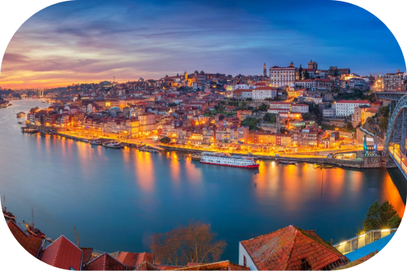

Porto

Porto é cidade vibrante e histórica situada no noroeste de Portugal, nas margens do rio Douro,
capital da sub-região da Área Metropolitana do Porto e da região do Norte. Tem uma população estimada
de 231 962 habitantes e uma área de 41.42 km quadrados